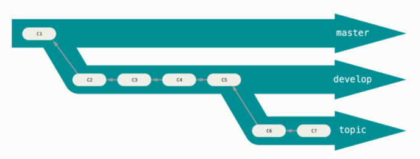

Git Branching#
One of the most powerful parts of Git is its ability to create multiple, side-by-side versions of the files in a repository. We call these branches. Conceptually, branching a repository creates a copy of the codebase in its current state, which you can work on without affecting the primary version from which it was copied. This allows you (or a team) to work down multiple paths without affecting the main (or another person’s) codebase.

Why branch?
Well, imagine you have a website, which you track with Git. You’ve published this website, but you’re now receiving feature requests from users. While you’d like to implement these features, you want to work on them separately before deploying them to your website. Here, you’d branch your site, develop your features, and, when you’re ready, merge that branch back into the main site codebase. Voilà! Website 2.0 is launched!
Making a Branch#
To see a list of branches in your repository, run
$ git branch
* main
The asterisk tells you which branch you’re on. To create a new branch and switch to it, use
$ git checkout -b second_branch
Switched to a new branch 'second_branch'
Now,
$ git branch
main
* second_branch
…has the two branches.
Making Changes to a Branch#
Let’s add a second file to our branch
$ git checkout second_branch
Switched to branch 'second_branch'
$ echo "This is a second file" > new.txt
Stage and commit it
$ git add new.txt
$ git commit -m 'Adding a second file'
[second_branch a41096f] Adding a second file
1 file changed, 1 insertion(+)
create mode 100644 new.txt
See the two files?
$ ls
hello.txt new.txt
Checking Out Branches#
With our second branch made,we can switch back to, or checkout, the first one
$ git checkout main
Switched to branch 'main'
But look, new.txt isn’t there:
$ ls
hello.txt
This is because one branch has different information on it than the other. If
you want to bring new.txt over to the first branch, you’ll need to merge
your two branches.
Note: Be sure to commit any changes you make on a branch before checking
another one out. If you don’t, those changes will follow you to the new branch,
and it can be a mess to sort out. If you’re not quite ready to commit changes
but need to switch branches, you can use git stash to temporarily store them
and safely switch branches. Once you’re back on the branch with the
un-committed changes, you can use git stash apply to retrieve them from the
stash.
Merging Branches#
When you merge a branch, Git folds any changes that you made to files in an
identified branch into the current working branch. It also adds any new files.
When you perform a merge, a new commit will be automatically created to track
the merge. To merge branches, commit any changes to the branch you want to
merge (which we’ve already done), then checkout the branch into which you want
to merge (here, main). Then, execute a merge command.
The whole sequence looks like this:
$ git checkout main
$ git merge second_branch
Updating 2591435..a41096f
Fast-forward
new.txt | 1 +
1 file changed, 1 insertion(+)
create mode 100644 new.txt
The “fast-forward” here means that we’ve been able to merge our branches without any conflicts (more on unsuccessful merges in a minute). Now,
$ ls
hello.txt new.txt
…shows both files.
Note too that the log on main has been updated:
$ git log --oneline
a41096f (HEAD -> main, second_branch) Adding a second file
2591435 Explaining why I made this file
be5fd7e Adding my first file to the repository
Inspect the differences between the file hello.txt on your two branches.
(hint: git diff).
To View an Earlier Commit#
The logic of git checkout also applies to looking at older commits on a
single branch. If you wanted to go back to the very first commit on main,
you could use
$ git checkout be5fd7e
You’ll likely get a long message from Git:
You are in ‘detached HEAD’ state. You can look around, make experimental changes and commit them, and you can discard any commits you make in this state without impacting any branches by switching back to a branch.
The HEAD of your repository is the most recent commit on the branch. As the
message above indicates, any changes you make in this detached state will not
directly affect other commits. If you’re just looking around and don’t want to
make any changes, you can reset to the HEAD with
$ git checkout main
…which will bring you back to the most recent commit.
But say, for example, you preserve some of the information in that earlier commit. You can do so by putting it on a new branch:
$ git checkout -b first_commit
$ git branch
* first_commit
main
second_branch
If you look inside:
$ ls
hello.txt
…there’s a single file, the contents of which:
$ cat hello.txt
Hello world!
…pertain only to that very first commit we made.
Fixing Merge Conflicts#
Let’s open hello.txt and, on a new line, add the following: “This is an old
version of this file.” The whole file should look like
Hello world!
This is an old version of this file.
Save it, stage it, and commit with a message.
$ git add hello.txt
$ git commit -m 'Explaining which version this is.'
All’s well so far. But say you want to merge this file into main. Remember
that, on main, this file reads:
Hello world!
This is my first Git repo.
There are two different versions of this file, so if you run a merge from
first_commit to main…
$ git checkout main
$ git merge first_commit
Auto-merging hello.txt
CONFLICT (content): Merge conflict in hello.txt
Automatic merge failed; fix conflicts and then commit the result.
…you’ll get a merge conflict. This means that Git is unable to merge the two branches because they have different data in the same area of the file (Git is usually quite good at merging file versions when their differences are in separate areas). We need to resolve these differences manually before Git can merge.
To do so, open hello.txt. When you do, you’ll see this:
Hello world!
<<<<<<< HEAD
This is my first Git repo.
=======
This is an old version of this file.
>>>>>>> first_commit
Git has injected new text into this file, showing you where exactly the
conflict lies. It also marks which branch has what information (HEAD for
main and first_commit for first_commit).
Fixing the merge conflict involves deleting the entire section marked off by
<<<<<<< and >>>>>>> and replacing it with the information you’d like the
final, merged file to retain. For us, we’ll use the HEAD information.
Once you’ve made those changes, your file should look like this:
Hello world!
This is my first Git repo.
Save the changes and run a status check. It should show
$ git status On branch main You have unmerged paths. (fix conflicts and run "git commit") (use "git merge --abort" to abort the merge) Unmerged paths: (use "git add..." to mark resolution) both modified: hello.txt no changes added to commit (use "git add" and/or "git commit -a")
If you add hello.txt and check the repository status again
$ git add hello.txt
$ git status
On branch main
All conflicts fixed but you are still merging.
(use "git commit" to conclude merge)
You’ll see that your conflicts are resolved. With that done, you can complete the merge with a final commit.
$ git commit -m 'Fixing conflict between main and first_commit'
[main b3af7fd] Fixing conflict between main and first_commit
Looking once more at the contents of hello.txt will show which changes you
implemented
Hello world!
This is my first Git repo.
And the Git log will have separate entries for the merge conflict and for the
file from any other branches into which you merged main
$ git log --oneline
b3af7fd (HEAD -> main) Fixing conflict between main and first_commit
f91603a (first_commit) Explaining which version this is.
a41096f (second_branch) Adding a second file
2591435 Explaining why I made this file
be5fd7e Adding my first file to the repository
We can also inspect these changes visually, using git log --graph
$ git log --all --oneline --graph
* 40a6e83 (HEAD -> main) Fixing conflict between main and first_commit
|\
| * 9953726 (first_commit) Explaining which version this is.
* | c6113ab (second_branch) Adding a second file
* | 879bfbd Explaining why I made this file
|/
* a23db84 Adding my first file to the repository
You can now keep working!